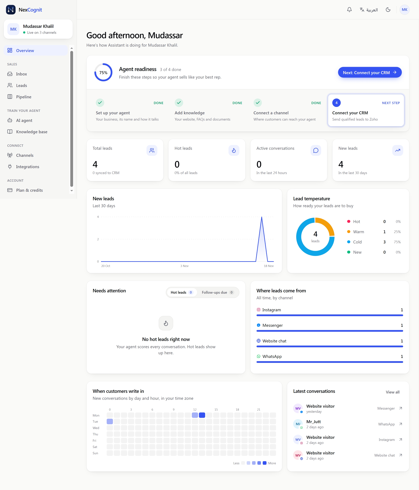

Dashboard
The Dashboard is the first page you see after signing in. In the NexCognit sidebar it is called Overview. It shows how your AI agent is doing, what needs your attention, and where your leads come from.
Dashboard overview
Use the Dashboard for a quick check at the start of the day. It shows your setup progress, your lead numbers, and your latest customer conversations in one place.
Agent readiness
At the top of the page, a progress circle shows how much of your setup is finished. There are four steps:
- Set up your agent: Your business, the agent's name, and how it talks.
- Add knowledge: Your website, FAQs, and documents.
- Connect a channel: Where customers can reach your agent.
- Connect your CRM: Send qualified leads to Zoho.
Finished steps are marked Done. The blue button at the top takes you straight to your next step.
Dashboard sections
- Total leads: Everyone who has contacted your business, and how many are synced to your CRM.
- Hot leads: Leads who are most ready to buy, shown as a share of all leads.
- Active conversations: Customers who sent a message in the last 24 hours.
- New leads: Leads created in the last 30 days.
- New leads chart: How many new leads arrived each day over the last 30 days.
- Lead temperature: How ready your leads are to buy, grouped as Hot, Warm, Cold, and New.
- Needs attention: Two tabs, Hot leads and Follow-ups due, showing leads you should contact soon.
- Where leads come from: How many leads each channel has brought in, such as Website chat, WhatsApp, Messenger, and Instagram.
- When customers write in: A grid showing which days and hours customers message you most, in your time zone.
- Latest conversations: Your most recent chats and the channel each one came from. Click View all to see every conversation.
Dashboard screenshot
The following image shows a typical Dashboard view in NexCognit.

Things to know
- Finish all four readiness steps so your agent can work at its best.
- Check Needs attention every day so hot leads and follow-ups are not missed.
- Use When customers write in to plan when your team should be available.
- The buttons at the top right let you see notifications, switch the language to Arabic, and turn dark mode on or off.